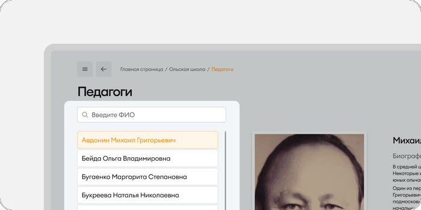
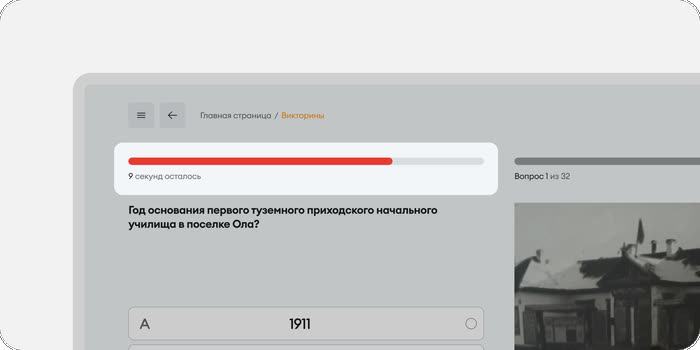
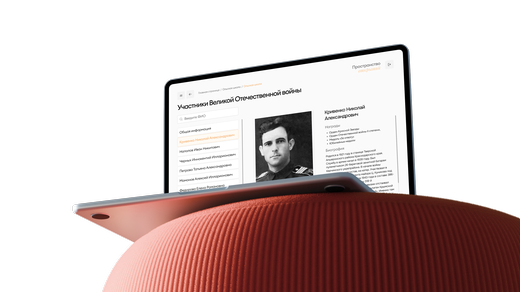

КраеВидение
КраеВидение
Это интерактивное приложение «Пространство открытий» для сенсорного стола Vinchi Era, установленного в школе посёлка Ола, Магаданской области. Приложение является цифровым архивом истории района: ветераны ВОВ, коренные народы Севера, история поселений, выпускники и педагоги, интерактивная викторина.
Я работал как дизайнер через агентство Vinchi Interactive — ведущего разработчика интерактивных инсталляций для музеев и образовательных учреждений России. Проект опубликован в портфолио агентства.
Спроектировать цифровой архив истории района для сенсорного стола в школе посёлка Ола. Это мой первый киоск-интерфейс: огромный экран 536×952 мм, пользователь стоит в метре от него, а hover-состояний нет совсем.
Изучил принципы киоск-интерфейсов, построил MindMap структуры и согласовал её с агентством до начала проектирования. Предложил поиск по разделам, эргономичную раскладку клавиатуры и прогресс-бар в викторине, отретушировал 200+ архивных фотографий и собрал UI-кит для разработки.
50+ уникальных экранов и 200+ обработанных фотографий. Стенд работает в школе посёлка Ола, а агентство поставило работе 5 звёзд на profi.ru.
Процесс работы
Исследование
До начала проектирования я изучил принципы, которые принципиально отличают киоск-интерфейс от веб или мобильного:
На экране 536×952 мм при разрешении 3840×2160 px средняя зона касания пальца (~12 мм) требует элементов минимум 80–100 px
Пользователь стоит в 80–120 см от экрана, а не сидит в 50 см от монитора. Это меняет размер шрифта и расположение зон взаимодействия.
Контент, доступный по наведению курсора, потерян — каждое действие должно быть явным: видимые кнопки и предсказуемый результат касания.
MindMap структуры
Начал с построения карты приложения: все разделы, уровни вложенности, типы контента на каждом экране, точки поиска и навигации. Согласовал структуру с агентством до начала проектирования, и это сэкономило несколько итераций правок позже.

Раздел «История школы» оказался самым сложным структурно — разношёрстный контент разных эпох без очевидной логики группировки. После анализа предложил делить по хронологии: XX век → XXI век → наши дни. Решение приняли.
Итерационное проектирование
Выбранный формат работы — еженедельные чек-ины с арт-директором агентства, правки в Figma с комментариями и передача PDF заказчику.
Несколько решений, которые я предложил проактивно:
Вместо общего поиска по всему приложению реализовал поиск по каждому разделу отдельно — это более нативное решение

Использовать эргономичную раскладку вместо плоской QWERTY — она лучше работает для стоячего пользователя на большом экране
Вместо полосы тайминга предложил прогресс-бар с цветовой индикацией, а кнопка «Следующий вопрос» появляется после выбора ответа

Ретушь 200+ фотографий
Отдельный большой блок работы — архивные фотографии школы. Большинство материалов: сканы советских фотографий, снимки со стендов, изображения из старых презентаций и Word-документов.
Использовал Photoshop и AI-инструменты для автоматизации повторяющихся операций.
UI-кит и передача в разработку
Чтобы ускорить и упростить работу разработки, я собрал интерфейс в единую систему внутри Figma. Все элементы были переведены на компоненты, токены и переиспользуемые паттерны.

Результат
50+ уникальных
экранов спроектировано

200+ фотографий обработано
ретушировано и подготовлено к публикации
Стенд активно работает
и находится в школе посёлка Ола

КомментарийРабота выполнена оперативно и качественно